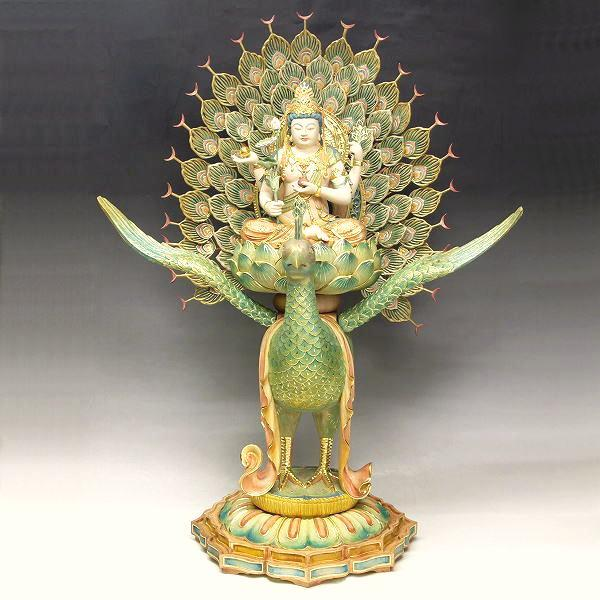

《孔雀明王經》、《孔雀明王法》為何那麼難宏揚起來呢？在佛門中只有一少部份人在修持；究其原因，主要在於《孔雀明王經》內含的真言及陀羅尼數量比較多、篇幅比較長的原故。
若從未學過《孔雀明王經》的人，起初要唸畢全本經文，相信需要數小時之久；而且不熟悉佛經中的真言咒語，唸起來就比較艱難。因為真言咒語中的譯音是特有的用字，生僻字亦比較多；如果沒有熟悉的老師指導及自己沒有大發心的話，是不容易學成功的。
現在經過台灣佛教界法師大德等的多方努力下，全文拼音的《孔雀明王經》終於出版了；學的人只要跟著光盤的教學一起讀誦，經文當中所有的真言陀羅尼就不難掌握及熟練了，確實是對學習《孔雀明王經》的一個大好消息，亦令說此經難學的人減少了一個借口。
孔雀明王菩薩、孔雀佛母是很慈悲時常憐念一切眾生的一位大菩薩。祂是大日如來的使者、是大日如來的化身之一，幫助大日如來救助有苦難的眾生。孔雀明王雖然慈悲，但孔雀明王的法力亦一樣強勁，柔中帶剛，克魔制勝！
《孔雀明王經》若集眾人及群體一起共修唸誦，扭轉天地災變及改變大共業的力量是相當驚人的；若密持咒心，一切大毒小毒、外毒內毒，身毒心毒、都通通給化掉於無形。我密持明王的聖號及咒心多年，所以體會良深。確實這孔雀明王法門，為對治今日末世一切惡業災害的有效大法；就算只唸孔雀明王菩薩聖號或真言幾句都能產生功效感應，更何況專念受持。
修持這《孔雀明王法》一段時間後，靈身就能坐在孔雀上在天空中任意飛行，所去皆通，要去哪裡就能去哪裡。人騎乘孔雀在天上自由自在地飛翔，騰雲駕霧、乘風破雨；這種奇幻玄妙的感覺、這種超現實的經驗，確實是相當淋漓暢快啊！
這金曜大孔雀，羽毛七彩亮麗，一閃一閃發著金黃色的耀眼光芒，是孔雀明王的坐騎。由於修持此法，故得佛母明王的加持護佑，能乘金曜孔雀，一時遍遊十方；這就是神足通的一種，是依通，亦叫做身如意通。
今日癌症遍天下，特別一眾婦女患癌的比率極高。癌就是毒的一種，最主要原因多數出在飲食上的問題；正由於食錯東西，長時間飲食上的失誤所致。比如身體從奶類吸收了大量的酪蛋白及雌激素，就容易引發癌病。牛隻自體分泌的雌激素早已存在於牛奶當中，這是內源性的；但最可悲的就是人類為牛隻所打的催奶針，這就是外源性的雌激素，對牛辛苦、對人亦不利。
若長期飲用牛奶，酪蛋白及雌激素吸收過多超了標，自身再不能轉化，從而擾亂了女性體內雌激素的平衡；再加上本有先天致癌基因的存在，比如二、三、八、十七、十九號染色體遺傳微粒－脱氧核糖核酸的變異，在這內因外緣的結合之下，就會生出癌病。
菩薩慈悲念女身，患癌病的女性最好修持《孔雀明王法》，祈請佛母明王救療醫治，很多種癌病都能得到相當理想的治療功效。
多年前一位患癌病的年輕女師兄，我就親自教她唸孔雀明王的聖號及心咒。我結出《孔雀心印》並助她唸誦修法，當場她就見到一只金曜大孔雀從空中飛來降下猛啄她的身體各部令她大汗淋漓，滿額滿身都濕透了，還從口中吐出了很多毒液毒水出來，體內大部份的癌毒經這次孔雀法的加持，就從汗液、嘔吐物及小便中給排掉了。
之後女師兄回家一直勤修孔雀明王的聖號及心咒而沒有退轉，生命到現在仍存活著。因為奇蹟地醫生說她身上所有的癌細胞已經完全消失了，當然是這些癌毒給金曜大孔雀通通吃掉，毒化了，癌病亦宣告痊癒。
孔雀明王願力強，隨緣赴感免災殃；
南洲諸國皆禮敬，北土千邦盡讚揚。
鎮宅驅邪憑佛力，安身救苦仗明王；
神功浩蕩應難測，堪與檀那降吉祥。
「摩訶摩瑜利，摩訶摩瑜利，摩訶摩瑜利………」
每當我一唸起孔雀明王的讚頌召請偈的時候、每當我唸出孔雀佛母的梵號之時，感覺願力法力就來了，心中完全充滿正氣、充滿力量及希望。
道行極高 化盡怨恨貪瞋
法力越大 謙虛要若常人
煙霞十里 送江山飄渺 蓮香染滿衣襟
不捨菩提 是名修學正因
能拋私愛 愛護天下萬民
萬法朝宗 持明燈寶戒 成佛只在即身
孔雀騰雲 回頭一笑 有朝遁世紅塵
孔雀騰雲 千峰遠去 舍利洒贈蒼生
這唐密大法，願能家喻戶曉，萬世傳揚！